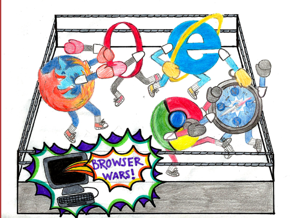

|
Un navegador o navegador web (del inglés, web browser) es un programa que permite ver la información que contiene una página web (ya se encuentre ésta alojada en un servidor dentro de la World Wide Web o en un servidor local).El navegador interpreta el código, HTML generalmente, en el que está escrita la página web y lo presenta en pantalla permitiendo al usuario interactuar con su contenido y navegar hacia otros lugares de la red mediante enlaces o hipervínculos. La funcionalidad básica de un navegador web es permitir la visualización de documentos de texto, posiblemente con recursos multimedia incrustados. Los documentos pueden estar ubicados en la computadora en donde está el usuario, pero también pueden estar en cualquier otro dispositivo que esté conectado a la computadora del usuario o a través de Internet, y que tenga los recursos necesarios para la transmisión de los documentos (un software servidor web). Tales documentos, comúnmente denominados páginas web, poseen hipervínculos que enlazan una porción de texto o una imagen a otro documento, normalmente relacionado con el texto o la imagen. Browser Wars (La guerra de los navegadores) es una historia que comienza en 1993, con los primeros navegadores web y que dura hasta nuestros días. Hace mucho tiempo, en un ciberespacio muy, muy lejano, se ideó un sistema para que cualquier navegador web (cliente) que sea utilizado para acceder a una página web tuviera una identificación interna denominada User Agent (Agente de usuario). Este Agente de usuario no era más que una cadena de texto establecida por los creadores del navegador para identificar de que aplicación se trata. Hacia mediados de 1995 la World Wide Web comenzaba a ganar notoriedad pública. Netscape Navigator fue el estándar de facto para navegación web en esos tiempos, consistiendo su competencia de sólo un puñado de navegadores como Mosaic y Lynx, los cuales fueron desarrollados en campus universitarios. Microsoft no tuvo más remedio que reconocer el éxito de Netscape y del potencial de la web, ya que el propio presidente en aquella época de Microsoft, Bill Gates, había afirmado que la Web no tendría futuro. Compraron licencias de Mosaic para crear la primera versión de Internet Explorer, versión 1.0, la cual se lanzó como parte del paquete de extensión Windows 95 en agosto de 1995. Internet Explorer 2.0 fue lanzado tres meses más tarde; la carrera por el control de la navegación web había comenzado. El punto crucial de la guerra de navegadores ocurrió cuando Microsoft apuntó la página de inicio de Internet Explorer (la página que se carga automáticamente cada vez que se abre el navegador) hacia su propio sitio web. Esta ventaja fue probablemente la razón por la cual Microsoft comenzó a distribuir Internet Explorer sin cargo.Nuevas versiones de Netscape (más tarde llamado Netscape Communicator) e Internet Explorer fueron liberadas a un ritmo acelerado en los años inmediatos. Las nuevas funcionalidades a menudo tomaban mayor prioridad que la reparación de errores, produciendo navegadores inestables, estándares de desarrollo web "movedizos", agujeros de seguridad y un sinfín de dolores de cabeza para los usuarios. Internet Explorer apenas comenzó a acercarse a su competencia con Internet Explorer 3.0 (lanzado en 1996), pues sólo ofrecía soporte para lenguajes interpretados (scripting) y la primera implementación comercial de las hojas de estilo en cascada (CSS). Durante un tiempo fue común que los diseñadores de páginas web colocaran advertencias en sus páginas tales como "visto mejor con Netscape" o "visto mejor con Internet Explorer". Estos mensajes generalmente apuntaban a una versión específica del navegador y eran comúnmente enlazados a una fuente de donde el navegador preferido podía ser descargado. En cierta medida estos mensajes fueron un indicador de la divergencia entre los estándares soportados por los navegadores.varias decisiones equivocadas de Netscape, conllevó a la derrota de Netscape hacia fines de 1998, tras lo cual la compañía fue adquirida por America Online por la suma de 4,2 millones de dólares. Internet Explorer se convirtió en el nuevo navegador dominante y llegó a un 96 % de porción del mercado (estadísticas basadas en conteos de visitas a sitios en la web), más de lo que Netscape obtuvo en su pico. La guerra de navegadores terminó cuando Internet Explorer dejó de tener una competencia seria en el mercado. Esto también trajo un fin a las rápidas innovaciones en navegadores; no hubo nuevas versiones desde el Internet Explorer 6.0, que se lanzó para coincidir con el lanzamiento de Windows XP (2001) hasta el 2006 cuando fue lanzado el Internet Explorer 7.0. que es un navegador muy superior en funcionalidad a su versión anterior. Éste fue un cambio obligado pues Firefox, de la Fundación Mozilla, lo superaba en compatibilidad con estándares web, funcionalidad y el soporte a extensiones convirtiéndolo en un nuevo competidor serio que amenazaría su posición en el mercado. MosaicMosaic, el primer navegador referente de la World Wide Web. Para hablar de esta historia del software debemos retroceder hasta el mes de enero de 1993, momento en el que Marc Andreessen y Eric Bina construyeron la primera versión, la cual sólo funcionaba sobre Unix. El navegador era un software propietario y desarrollado por el NCSA de la Universidad de Illinois. Andreessen además sería el que desarrollaría parte del código que hizo posible el acceso a los sitios web a través del protocolo file://. El éxito rotundo que tuvo la primera versión de Mosaic supuso que en el mes de agosto del mismo año se lanzaran las primeras versiones compatibles para Windows y Macintosh. Aunque como decía al principio, Mosaic fue el segundo navegador que permitía visualizar web, se le atribuye la popularización de lo que hoy conocemos como World Wide Web. No sólo eso, fue también el cliente temprano de protocolos como FTP, NNTP o Gopher.Su llegada fue un referente para las primeras versiones posteriores de Mozilla y Spyglass, que más tarde se convertiría en Internet Explorer. Los motivos de su éxito fueron varios, pero principalmente y una vez que llegó a Windows y Macintosh, se convirtió en un navegador ejemplar, algo extraño para un pionero. Pensemos que a su interfaz limpia y de fácil acceso y a su aspecto gráfico cuidado, el usuario podía acceder a la web a través de HTTP (en este caso a la versión 0,9). Tanto en su “época” como a partir de ella, Mosaic fue un referente que condujo a la explosión de Internet en la década de los 90. De alguna forma transformó en atractivo el acceso a la web pasando de ser un espacio copado para áreas estrictamente técnicas a atraer a las grandes masas de público y mercado.Una de las claves para su expansión fue otorgarle al navegador y añadirle gráficos, imágenes incrustadas desterrando el aspecto aburrido de texto basado en software. Quizá la otra gran clave fue salir de Unix ampliándolo a otros sistemas (sobre todo Windows que eran el 80% de los equipos en el mundo). 
|